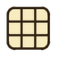
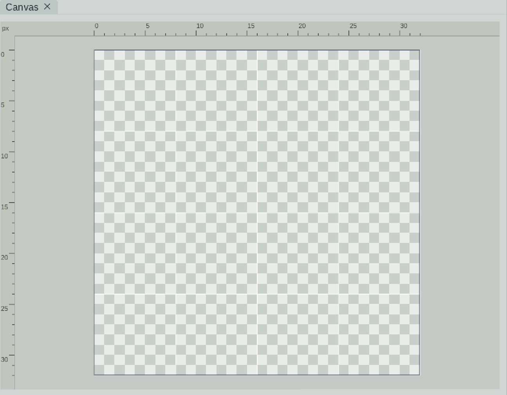

Canvas, grid, guidesZoom, the pixel grid, rulers with guides, resizing the canvas and the border.

Coordinate system
The origin is the top left corner. X grows to the right, Y grows downward. The labels in windows (Slice, Mirror, guides) use the same system.
Zoom and panning
- Mouse wheel - zoom from 1x to 64x (1.2x per click); Ctrl+wheel - brush size from 1 to 50 for tools with a brush. The Zoom tool (Z) zooms by dragging.
- The Hand tool (H) pans the view.
- F /
View > Fit canvas to view- fit the canvas to the window.
The pixel grid
View > Pixel grid (Ctrl+G) shows pixel boundaries. The Grid size window contains the Pixel grid checkbox, the line spacing on each axis (X spacing (px), Y spacing (px)) and Line color with transparency (the  Apply grid size and Cancel buttons apply and discard the changes) - so you can make a grid coarser than a pixel, for example along tile boundaries.
Apply grid size and Cancel buttons apply and discard the changes) - so you can make a grid coarser than a pixel, for example along tile boundaries.
Rulers and guides
The Guides window (Canvas rulers and guides) turns on rulers along the canvas edges.
- Click or drag on a ruler to create a guide (horizontal or vertical).
- Right-clicking a ruler opens a menu: Add horizontal / vertical line here and the ruler options.
- The Edit lines button turns on edit mode: drag the lines, right-click - mirror or delete, Shift - free position, Esc or Finish editing lines - finish. Drag a line outside the workspace to delete it.
- Show guide lines shows/hides the guides, Clear all lines deletes all of them.
- The Use this line as a mirror item in a line's menu turns a guide into a symmetry axis.
Resizing the canvas
Press C, then drag an edge or corner inward or outward; C or Esc ends the mode. While dragging, the current and the initial size are shown ("Canvas: W x H px | Initial: W x H px") along with snapping to the initial size. For precise input open Edit > Resize canvas...:
- Width and Height - the new size; "Current size" and "New size" are shown.
- Keep existing pixels aligned to - nine anchors (corners, edges, center): which side the existing pixels are pinned to.
- The new space is transparent; shrinking the size crops pixels beyond the new edge.
- The size is limited by the maximum texture size; the memory budget is checked before the change.
This is how the icons of the nine anchors look in the Resize canvas window (in the program a tooltip shows the anchor's name).
Border
The Border settings window turns on drawing of the border (Draw border) and sets its brightness (Border shade, 0-1). The outline colors and their chance are configured in the palette (Outline, Outline chance).
Several frames on the canvas
The canvas title shows the frame number ("Canvas frame N"). Frames are switched in the Timeline or with the ← / → keys when the canvas or the Timeline has focus.
Dragging files
A PNG, JPG or .aseprite file can be dragged into the program window. A dialog with the image size appears: Create new document creates a document from the file, Insert into current document inserts it into the current document (available when an editable document is open), Cancel aborts. When inserting, an image that is too large is scaled or cropped to the canvas - the program reports which was done. Pasting from the clipboard supports the system image (Windows); if the clipboard is unavailable an internal copy is used.